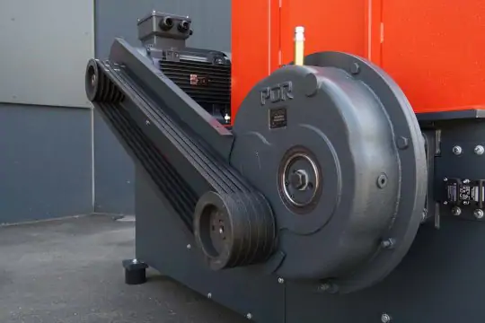

01
Powerful drive
by electric motor, power belt and robust gearbox
The robust WL 600 shredder is perfect for small- to middle-sized wood shops for the purpose of shredding all kinds of wood like particle board scrap, MDF, solid wood, and other wood scrap.
by electric motor, power belt and robust gearbox
Adapt the screen to your needs. The smaller the hole diameter, the finer the shredded material that is discharged. Screens can be exchanged flexibly and are bolted as standard.

The Sucker Holzbau GbR produces a lot of wood waste. With the help of a WL 6 shredder and a wood chip stove, this is used to heat the workshops and offices as well as three single-family houses.
Visit YouTubeThe ram, which moves horizontally back and forth via hydraulics, feeds the material to the rotor. With WEIMA, it can be controlled or cycled automatically depending on the load. If required, of course, it can also be controlled manually. For even more aggressive feeding, we recommend additional serrated plates and hold-down device, which also hold bulky and long parts securely in place. A shock valve located on the hydraulic cylinder absorbs any shocks to the drawer, thus ensuring a longer service life.
Depending on your needs and frame design (elevated machine with conveyor belt cutout or side spout), you have the option of discharging shredded material either by air suction, discharge screw or classic conveyor belt. With experience from many thousands of machines on the market, we are also experts in conveyor technology and can supply you with a turnkey solution from a single source.
Vibration-damping machine feet ensure a secure footing and help to significantly reduce disruptive vibrations in the surrounding area. Since the machine does not have to be anchored to the ground first, installation is particularly flexible and convenient.
| |
|
||
WL 600 |
WL 8 |
||
| Rotor Diameter (mm) | 260 *1 | 260 *1 | |
| Rotor length (mm) | 600 | 1.000 | |
| Rotor Speed (rpm) | 80 - 125 *2 | 80 - 125 *2 | |
| Power (kW) | 15-18,5 *3 | 110*3 | |
| Rotor Knives | 14*4 | 54*4 | |
| Available knife sizes (mm) | 40 | 40 | |
| Fraction size (mm) | 10 -40 | 10 -40 | |
| Connection diameter (mm) | 160 | 200 | |
| Infeed opening (mm) | 600 x 800 | 1.000 x 1.250 | |
| Length (mm) | 1.805 | 2.045 | |
| Width (mm) | 1.118 | 1.740 | |
| Height (mm) | 1.645 | 1.840 | |
| Weight (approx. kg) | 1.100 | 2.200 | |
| *1 dependent on flight circle *2 dependent on specific drive configuration *3 dependent on drive technology *4 dependent on machine configuration |
*1 dependent on flight circle *2 dependent on specific drive configuration *3 dependent on drive technology *4 dependent on machine configuration |